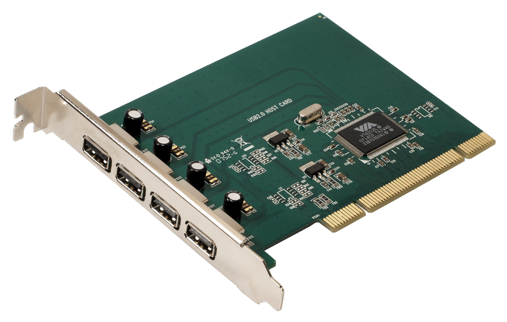

If your motherboard and none of your other cards included USB connections, you should buy a USB card.
If you need to buy a USB card, keep these options in mind:
The number of ports is both important and not important. It is true you may need many ports available to plug in your keyboard, mouse, printer, an external hard drive, and other hardware. The reason that may not matter too much is because you can buy an adapter that will turn one USB connection into many. It is easy though to find USB cards with many connections and the cost is cheap.
One thing you may want to consider is how fast the USB ports go. USB 2.0 ports transfer speed at 480 megabits per second, whereas USB 3.0 ports transfer at 5 gigabits per second. This is an impressive difference, but seldom to people need something that fast. If speed is important to you, make sure to buy accordingly.
